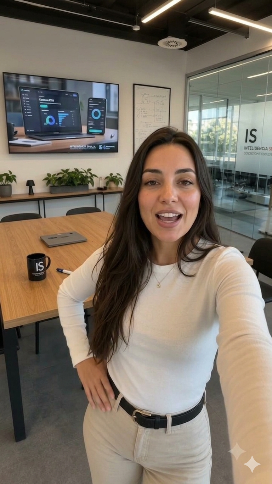

Anuncio Vídeo Final Acabado
Fotogramas Clave de Referencia (Prompts Ancla)

creaciones/inteligencia-sevilla/auditoria-oficina-linea-visual-1/prompts/prompts.md
Auditoría gratuita — Oficina línea visual iS (chico, 3 imágenes + 1 vídeo)
- Marca: Inteligencia Sevilla
- Flujo: 3 imágenes + 1 vídeo (talking-head; 3 momentos del mismo discurso)
- Fecha: 2026-06-19
Versión siguiendo la LÍNEA VISUAL aprobada: oficina cálida iS acristalada, TV de fondo con branding iS y dashboard, taza iS, presentador chico de camisa azul marino. 9:16. Cámara fija idéntica en las 3: plano medio frontal UGC, altura de ojos (~1,5 m), composición centrada, TV de marca al fondo como elemento fijo. Incluye la toma A (24s, con discurso completo) y la toma B (10s, versión final adaptada a 10 segundos sin etiquetas de herramienta).
---
Versión A — 24 segundos
Imagen 1 — El gancho · 9:16
Hyperrealistic vertical 9:16 corporate UGC photo of a Spanish man, 32 years old, short dark
hair, light stubble, wearing a fitted navy blue shirt, standing in a modern glass-walled
consulting office in Seville. Medium shot from a fixed frontal camera at eye level 1.5 meters,
centered composition. Warm cove LED ceiling lighting plus soft natural daylight, cream and warm
wood tones, a long dark meeting table with a black "iS" branded coffee mug. On the back wall, a
large TV screen shows the "iS Inteligencia Sevilla" branding with a clean dashboard. He looks
directly at camera with an engaging, confident expression, mid-gesture as if opening a
conversation. Warm clean color grade, natural skin texture, no retouching, not studio-perfect.
Ultra detailed, 8K, photorealistic, warm editorial corporate style.Imagen 2 — La explicación · 9:16
Hyperrealistic vertical 9:16 corporate UGC photo of the same Spanish man, identical 32 years old,
same short dark hair, same navy blue shirt, exact same fixed frontal camera at eye level 1.5
meters, same centered composition, same glass-walled Seville office, same warm cove lighting and
daylight, same dark meeting table with black "iS" mug, same TV on the back wall now clearly
showing a dashboard titled "Auditoría gratuita" with gold accents. He is mid-explanation, one
hand gesturing openly toward the TV screen, calm confident expert expression, looking between
camera and screen. Same warm color grade. Natural skin texture, no retouching. Ultra detailed,
8K, photorealistic, warm editorial corporate style.Imagen 3 — El cierre / CTA · 9:16
Hyperrealistic vertical 9:16 corporate UGC photo of the same Spanish man, identical 32 years old,
same navy blue shirt, exact same fixed frontal camera at eye level 1.5 meters, same centered
composition, same glass-walled Seville office, same warm cove lighting and daylight, same dark
table with black "iS" mug, same "iS Inteligencia Sevilla" branding on the back wall TV. Now he
has an open, warm, inviting smile, both hands in a welcoming gesture toward camera, confident and
close as if inviting the viewer. Slightly warmer color grade with gold accents emphasized.
Natural skin texture, no retouching. Ultra detailed, 8K, photorealistic, warm editorial corporate
style.Vídeo final · 9:16 (con las 3 imágenes como referencia)
Cinematic vertical 9:16 UGC talking-head advertisement, 24 seconds. Use the three reference
images provided as strict visual anchors — maintain identical man (same face, hair, navy blue
shirt), identical fixed frontal camera at eye level, identical centered composition, identical
warm glass-walled Seville office with cove lighting, dark meeting table, black "iS" branded mug
and the back-wall TV showing "iS Inteligencia Sevilla" branding throughout the entire video.
The man talks directly to camera in a relaxed, confident, trusted-advisor style, with natural
hand gestures matching the three image moments (opening gesture, explaining toward the TV
dashboard, warm inviting close). He says, in Spanish:
"¿Sabes cuánto tiempo pierde tu empresa cada semana en tareas que la inteligencia artificial
podría hacer sola? Casi nadie lo calcula, y ahí se va el dinero. En Inteligencia Sevilla te
hacemos una auditoría gratuita: analizamos tu negocio y te decimos, sin humo, qué merece la pena
implementar y qué no. Son tres horas, gratis y sin compromiso. Entra en inteligenciasevilla.com
y reserva la tuya. Te vas a sorprender."
Male voice, 30-40 years old, Castilian Spanish accent (acento español de España, NOT Latin
American). Warm, expert but approachable, conversational. Clear medium timbre, natural rhythm
with genuine inflections, slight emphasis on "gratuita" and "sin humo". Warm color grade with
gold accents. Photorealistic, cinematic. No text overlays. No music.
Audio language: Spanish (español de España). All dialogue must be spoken in Spanish.Copy de montaje (textos de superposición)
- 0-8s: "¿Cuánto te cuesta lo que aún haces a mano?"
- 8-18s: "Auditoría gratuita · sin humo"
- 18-24s: "3 horas · gratis · inteligenciasevilla.com"
- Pantalla final: logo iS — INTELIGENCIA SEVILLA sobre negro con acento dorado → "Reserva tu auditoría gratuita".
---
Versión B — 10 segundos (versión final aprobada, sin etiquetas de herramienta)
> Ajuste: mismas 3 imágenes que la versión A; guion recortado a 10s (hook + servicio + CTA) y títulos neutros (a veces se usa Gemini o Google Flow).
Imagen 1 — El gancho · 9:16
Hyperrealistic vertical 9:16 corporate UGC photo of a Spanish man, 32 years old, short dark
hair, light stubble, wearing a fitted navy blue shirt, standing in a modern glass-walled
consulting office in Seville. Medium shot from a fixed frontal camera at eye level 1.5 meters,
centered composition. Warm cove LED ceiling lighting plus soft natural daylight, cream and warm
wood tones, a long dark meeting table with a black "iS" branded coffee mug. On the back wall a
large TV screen shows the "iS Inteligencia Sevilla" branding with a clean dashboard. He looks
directly at camera with an engaging, confident expression, mid-gesture as if opening a
conversation. Warm clean color grade, natural skin texture, no retouching, not studio-perfect.
Ultra detailed, 8K, photorealistic, warm editorial corporate style.Imagen 2 — La explicación · 9:16
Hyperrealistic vertical 9:16 corporate UGC photo of the same Spanish man, identical 32 years old,
same short dark hair, same navy blue shirt, exact same fixed frontal camera at eye level 1.5
meters, same centered composition, same glass-walled Seville office, same warm cove lighting and
daylight, same dark meeting table with black "iS" mug, same back-wall TV now clearly showing a
dashboard titled "Auditoría gratuita" with gold accents. He is mid-explanation, one hand
gesturing openly toward the TV screen, calm confident expert expression, looking between camera
and screen. Same warm color grade. Natural skin texture, no retouching. Ultra detailed, 8K,
photorealistic, warm editorial corporate style.Imagen 3 — El cierre / CTA · 9:16
Hyperrealistic vertical 9:16 corporate UGC photo of the same Spanish man, identical 32 years old,
same navy blue shirt, exact same fixed frontal camera at eye level 1.5 meters, same centered
composition, same glass-walled Seville office, same warm cove lighting and daylight, same dark
table with black "iS" mug, same "iS Inteligencia Sevilla" branding on the back-wall TV. Now he
has an open, warm, inviting smile, both hands in a welcoming gesture toward camera, confident and
close as if inviting the viewer. Slightly warmer color grade with gold accents emphasized.
Natural skin texture, no retouching. Ultra detailed, 8K, photorealistic, warm editorial corporate
style.Vídeo final · 9:16 · 10 segundos (con las 3 imágenes como referencia)
Cinematic vertical 9:16 UGC talking-head advertisement, 10 seconds total. Use the three
reference images provided as strict visual anchors — maintain identical man (same face, hair,
navy blue shirt), identical fixed frontal camera at eye level, identical centered composition,
identical warm glass-walled Seville office with cove lighting, dark meeting table, black "iS"
branded mug and the back-wall TV showing "iS Inteligencia Sevilla" branding throughout.
The man talks directly to camera in a relaxed, confident, trusted-advisor style, with natural
hand gestures: opening gesture (0-3s), gesturing toward the TV dashboard (3-7s), warm inviting
close toward camera (7-10s). He says, in Spanish:
"¿Cuánto tiempo pierde tu empresa en tareas que la IA podría hacer sola? En Inteligencia Sevilla
te hacemos una auditoría gratuita, sin humo. Reserva en inteligenciasevilla.com."
Male voice, 30-40 years old, Castilian Spanish accent (acento español de España, NOT Latin
American). Warm, expert but approachable, conversational, slightly brisk pace to fit 10 seconds.
Slight emphasis on "gratuita" and "sin humo". Warm color grade with gold accents. Photorealistic,
cinematic. No text overlays. No music.
Audio language: Spanish (español de España). All dialogue must be spoken in Spanish.Copy de montaje (10s)
- 0-3s: "¿Cuánto te cuesta hacerlo a mano?"
- 3-7s: "Auditoría gratuita · sin humo"
- 7-10s: "Gratis · inteligenciasevilla.com"
- Pantalla final: logo iS — INTELIGENCIA SEVILLA sobre negro con acento dorado → "Reserva tu auditoría gratuita".
creaciones/inteligencia-sevilla/visita-cliente-peluqueria-canina/prompts/prompts.md
Visita a cliente — Testimonio peluquería canina (CRM) (3 imágenes + 1 vídeo)
- Marca: Inteligencia Sevilla
- Flujo: 3 imágenes + 1 vídeo (formato "visita a cliente" / testimonial)
- Fecha: 2026-06-19
Una persona de IS (camisa azul marino) visita una peluquería canina una semana después de implementar el CRM; la dueña cuenta lo contenta que está. 9:16, 10 segundos, sin etiquetas de herramienta. (Versión final corregida a UNA sola persona de IS.) Cámara fija de escena: plano medio-general estable de la recepción, 9:16, luz cálida natural.
Imagen 1 — La llegada · 9:16
Hyperrealistic vertical 9:16 photo inside a warm, bright dog-grooming salon in Seville (reception
area with a wooden counter, grooming tools, shelves with pet products, a small dog on the
counter). One Spanish man, 30-35 years old, short dark hair, wearing a fitted navy blue shirt, is
entering through the glass front door, friendly and professional. Behind the counter, the salon
owner — a Spanish woman, 35-40, wearing a work apron over casual clothes — smiles and greets him
warmly. Medium-wide shot from a fixed frontal camera at eye level, centered composition. Warm
natural daylight through the shop window, cozy inviting color grade. A tablet showing an "iS
Inteligencia Sevilla" CRM dashboard rests on the counter. Natural skin texture, candid real
moment, no retouching. Ultra detailed, 8K, photorealistic, warm editorial style.Imagen 2 — El testimonio · 9:16
Hyperrealistic vertical 9:16 photo inside the same dog-grooming salon, identical reception area,
exact same fixed frontal camera at eye level, same centered composition, same warm daylight. The
salon owner (same woman, work apron) stands behind the counter, happily showing and pointing at a
tablet displaying a custom dog-grooming CRM with sections "Citas", "Mascotas" and "Clientes",
gold accents and the iS logo. The single navy-shirted IS man stands beside her, looking at the
screen and nodding, pleased. The owner has an enthusiastic, satisfied expression as she talks.
Same cozy warm color grade. Natural skin texture, candid, no retouching. Ultra detailed, 8K,
photorealistic, warm editorial style.Imagen 3 — El cierre · 9:16
Hyperrealistic vertical 9:16 photo inside the same dog-grooming salon, identical reception area,
exact same fixed frontal camera at eye level, same centered composition, same warm daylight. The
salon owner and the single IS man share a warm, genuine moment — smiling, the owner gesturing
happily, a friendly handshake or relaxed laughter, the small dog visible on the counter. Trust
and satisfaction in the scene. Slightly warmer color grade with soft gold tones. Natural skin
texture, candid, no retouching. Ultra detailed, 8K, photorealistic, warm editorial style.Vídeo final · 9:16 · 10 segundos (con las 3 imágenes como referencia)
Cinematic vertical 9:16 testimonial advertisement, 10 seconds total. Use the three reference
images provided as strict visual anchors — maintain identical dog-grooming salon, identical
characters (one navy-shirted IS man and the woman owner in a work apron), identical fixed frontal
camera at eye level, identical centered composition and warm daylight throughout.
Sequence: 0-3s the IS man enters through the front door and the owner greets him warmly; 3-8s the
owner, behind the counter, happily shows the tablet with the dog-grooming CRM and speaks to him;
7-10s warm closing moment, smiles and a handshake. Natural realistic motion.
The salon owner speaks directly and warmly, in Spanish:
"Desde que tengo el CRM de Inteligencia Sevilla controlo todas las citas y la ficha de cada
mascota. No se me escapa ni un cliente, ¡me ha cambiado el día a día!"
Female voice, 35-45 years old, Castilian Spanish accent (acento español de España, NOT Latin
American). Warm, genuine, happy and grateful, conversational, slightly brisk to fit 10 seconds.
Natural ambient salon sound feel. Warm color grade with soft gold tones. Photorealistic,
cinematic. No text overlays. No music.
Audio language: Spanish (español de España). All dialogue must be spoken in Spanish.Copy de montaje (10s)
- 0-3s: "Una semana después de implementar su CRM…"
- 3-7s: "Todas las citas y fichas, bajo control"
- 7-10s: "Inteligencia Sevilla · CRM a medida"
- Pantalla final: logo iS — INTELIGENCIA SEVILLA sobre negro con acento dorado → "Tu CRM a medida, también para tu peluquería canina".
Showroom y Metodología
Campaña publicitaria generada con Inteligencia Artificial utilizando la técnica 3+1 y consistencia visual.
Fórmulas de Prompts Utilizadas
No se encontraron prompts estructurados en código. Lee los ficheros Markdown adjuntos para estudiar la campaña.
Lecciones de este Proyecto
Este proyecto representa la técnica de **consistencia visual** guiada por referencias cruzadas.
- Coherencia de Estructura: Se preservan los elementos tridimensionales fijos de fondo usando guías de imagen en Google Flow.
- Postproducción: El vídeo se renderiza limpio y el texto publicitario y la música se montan externamente en CapCut.